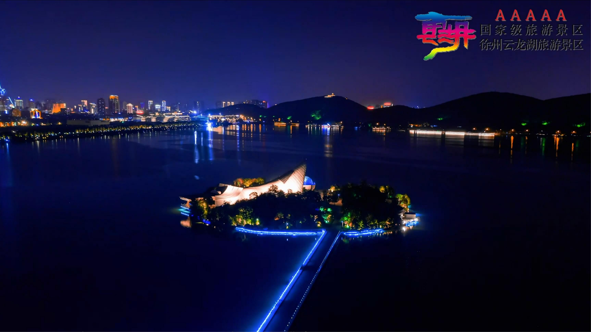

主要景点介绍
云龙山
苏北名胜云龙山，素为徐州名胜之冠。云龙山海拔142米，长达3公里。山分九节、蜿蜒起伏、状似神龙，故称之为云龙山。云龙山上苍松翠柏蓊郁蔽日，殿宇亭台掩映，四时风光不同，如宋代大文豪苏东坡所描绘的那样：“春夏之交，草木际天；秋冬雪月，千里一色；风雨晦明之间，俯仰百变。”云龙山既有名山大川的自然风光，又有历史悠久的人文景观。云龙山历史文化底蕴浓重，是历代文人墨客的喜去之处，山上文物古迹众多，从北魏至民国期间，留有北魏时代的大石佛，唐宋摩崖石刻，宋代的放鹤亭、招鹤亭、饮鹤泉、张山人旧居，明代的兴化禅寺，清代的大士岩、山西会馆、船厅、御碑亭、碑廊等历史文物古迹。解放后云龙山又修复和新建了幽邃轩、洞天小庐、跨云阁、云龙书院、杏花村、观景台、同心台等一大批景点。云龙山的文化积淀历史悠久而厚重，尤以名人文化著称。宋代苏东坡任徐州太守时登山怀古抒情，留下《放鹤亭记》等许多传世佳作名篇。云龙山的佛教文化源远流长。从北魏到清代，逐步建起兴化寺、大士岩、唐宋摩崖石刻等著名历史古迹，其中尤以兴化寺的“三层砖覆三丈佛，庙小能容大菩萨”的独特景观而闻名。1952年10月29日，毛泽东主席来徐州视察工作，曾在罗瑞卿、许世友和当时的徐州市委市政府领导华诚一、张华中等同志陪同下，兴致勃勃地登上云龙山，并发出了绿化荒山，变荒山为富山的号召。
金山公园
金山公园位于云龙湖风景区东南方向，坐落在云龙山脚下，园内有一棵树龄643年的古槐树，同时园内还有苏公塔、同心池、荷园、苏公塔码头。云龙湖东岸有一丘名“金镫山”，海拔45米，山上有五层八角金琉璃塔一座，每层有观景护栏，内有旋转塔梯，扶摇可上，是为纪念宋熙宁十年（1077年）苏轼任徐州知州而建，取名苏公塔。苏公塔为仿宋建筑，高26米。登塔俯瞰全湖，湖畔水榭曲桥、亭台虹桥错落有致，碧波塔影，荡漾诗情。园内的同心池是适合情侣和夫妻见证爱情、祈求幸福的好去处，游客可在同心池边系上许愿红丝带，扣上同心锁，挂上许愿牌以祝福爱情甜蜜幸福。荷园，顾名思义，满池种满荷花，当荷花盛开季节，荷叶铺满水面，荷花朵朵盛开娇艳欲滴，美不胜收。在苏公塔码头，游人还可乘坐特色电动自划船（大黄鸭船、火烈鸟船等）、快艇、画舫船、摇橹船，在水面上欣赏云龙湖美景。
珠山公园
珠山公园位于云龙湖西侧珠山脚下，环绕整个珠山山脉，总占地面积80公顷，全长3.6公里，建设总投资2亿元。整个公园以道教文化为核心，以徐州丰县籍道教创始人张道陵仙路历程（得道、修炼、斗法、立教、升天）为主线，设有鹤鸣台、百草坛、天师广场、创教路、天师岭等景点，来展示道家文化。在展示道教文化的同时，公园建设也充分注重游人的参与性与融入性。天师广场设有一处人造瀑布，名为“五斗瀑布”，整个瀑布用5000多吨的绵羊石叠石引水而成，石与水，一刚一柔、一静一动，相映成趣。瀑布上方的张道陵像，总重13.5吨，高9.3米。清澈水流由山上一贯而下，是游客戏水拍照的好去处。整个广场以植物配植进行合理的空间布局和动静分区，特色鲜明，基础设施完备，是集休闲、生态、自然为一体的开放式主题性景区。
沉水廊道
顾名思义就是没入水底的廊道，廊道总长148米，其中北廊60米，南廊88米，整个廊道内湖水域面积在1.1万平方米，内湖湖水再通过先进的水净化系统不断循环净化处理。行走于沉水廊道，透过两侧的玻璃，可以看到各种鱼类嬉戏于水生植物之间，有时它们也会调皮的吹出一连串的泡泡，然后飞快的离去，有时又静静紧贴着玻璃一动不动，仿佛在闭目养神。留恋间，不知不觉穿过廊道来到了玉珠岛。整岛采用莲花石以及各种造型独特的盆景、大树点缀，如造型奇特的五针松、映山红、红豆杉、紫薇，高大的柳树、水杉、榔榆等。两个廊道与玉珠岛呈二龙戏珠势，盘恒在湖面上。沉水廊道西侧，是万福广场。站在广场的亲水平台上往北眺望，湖岸线曲折蜿蜒，桃花灼灼，绿柳依依，拱桥、绿岛、亭阁相映成趣，整个小南湖风光尽收眼底，美不胜收，成为游客观光赏景的绝佳视点。

诗博园
诗博园位于珠山东麓山脚下，紧邻珠山艺术街区，与沉水廊道相互呼应。诗博园内精选了历代68首诗词，涉及59位诗词名家。整个园区分为南北两块，总占地面积约85亩，依次布置从春秋战国一直到近现代的诗词景观小品，通过景墙、屏风、玻雕、小品等多种形式，以及石材、玻璃、金属等不同材质集中展示徐州诗词文化。园区结合原有景观游步道，进一步优化梳理游览线路，建设中心诗词回廊，将各展示区域串联在一起，使游客能充分体验到良好的诗词碑林文化氛围。
步入诗博园，迎面看到的是一块巨大石屏风，上书"诗博园"三个隶书大字。屏风后是一条宽广的诗词大道，两侧树立十余个玻雕诗词景墙，雕刻着最富盛名的歌咏徐州的诗词和作者雕像。位居首位的两块景墙分别是汉高祖刘邦的《大风歌》和元代诗人萨都剌的名作《木兰花慢·彭城怀古》。诗词大道的尽头是一座呈“回”字型的中心诗词回廊，回廊内和四周用屏风、玻雕布置了二十余首歌咏徐州的古代诗词雕刻作品，并附上了作者简介。置身其中，宛如徜徉在诗歌的海洋，给人一种“穿越感”。走出回廊，沿步道拾级而上，依次可到春秋战国、秦汉、隋唐、宋元、明清、民国及现代诗词小品园，按照历史顺序欣赏到屈原、李白、辛弃疾等历朝历代诗词名家赋诗徐州的大作。

苏公岛与鹤鸣洲
苏公岛和鸣鹤洲二者相连，都是小南湖景区内两个人工堆土而成的小岛，建于2007年。两岛四面环水，中间通过廊桥相连。苏公岛、鸣鹤洲景观以东坡文化为主题，通过不同的园林绿化空间，来展示东坡文化。岛上亭台、楼阁掩映在林木中，形成幽林碧水、动静结合的景观特色。主要景观有东坡文苑、东坡足迹图、鹤鸣阁等，登岛游览，四周景观尽收眼底，让人恍若置身于江南水乡。


荷风岛
荷风岛是一处半岛，因其三面环水，四季花香，以荷池景观为特色、以自然生态为主题，故名荷风岛。岛上建筑粉墙黛瓦，栗柱灰砖，亭廊花窗，处处体现苏式园林精致淡雅的特色。入口处有一座翘檐门楼，以其“清风袭袭，荷香阵阵”的意境，取名为“清风苑”。荷风岛上有众多袖珍景观，如云锦亭、冷香亭、映日亭、报雨轩和不染堂等。岛上的云锦亭，亭名取意于宋代词人李清照《一剪梅·离别》词句：“红藕香残玉簟秋。轻解罗裳，独上兰舟。云中谁寄锦书来？雁字回时，月满西楼。”表达鸿雁传情的意境。冷香亭，取意于李清照《醉花阴·重阳》中的“东篱把酒黄昏后，有暗香盈袖”一句。报雨轩，取意于唐诗“柳絮池塘淡淡风，留得残荷听雨声”的佳句。登临此岛，仿佛置身温婉旖旎的江南美景之中。
钓鱼岛
钓鱼岛位于珠山西路中段，三面环山，紧邻市区，交通便利。岛内拥有垂钓水面40亩、停车场2000平方米、休闲茶社1000多平方米、绿地三万平方米。垂钓鱼塘包括大小鲫鱼池各1个、混养池2个。其中，小鲫鱼池是标准的专业垂钓比赛场地。混养池两种，一种放养云龙湖特产的无公害鲤鱼、草鱼、鳊鱼等，另一种放养名贵鱼类。小岛吸引全国众多钓鱼爱好者来此垂钓，并经常此举行全国钓鱼锦标赛、区域性钓鱼联赛、城市与城市之间的对抗赛、联谊赛等，能同时容纳上千人垂钓与比赛。
紫薇岛
紫薇岛位于云龙湖西南侧，岛内现有紫韵堂、来禽亭等古典园林建筑，绿化和景观设计精致，环境优雅，文人雅士常来此品茗观景。
沙月岛（爱情岛）
沙月岛别名爱情岛，是一座婚恋主题公园。岛上景观以婚恋爱情为主线，贯穿诸多温馨浪漫的情感元素，根据游客年龄层的需要，分为伊甸之路、岁月情深、夕阳之约三个景区。景区以岛内月亮湖为中心，月亮湖被红线桥、鹊桥两座景观桥划分成三片水面。南面狭窄处有一座形如满月的单孔石拱桥，名叫红线桥；北面宽阔处的N字形亲水长桥，名叫鹊桥。两桥相望，别有一番情趣。岛东南角临水处有一座六角亭，名叫月老亭。月老主管人间婚嫁之事。相传唐朝杜陵书生韦固在宋城（就是现今的商丘）巧遇月下老人，月下老人为韦固牵红绳指明婚嫁对象，后来韦固果然应月老之语与相州刺史王泰之女结为连理。故事流传至今，使后人相信男女的结合乃月老牵起红绳加以撮合。岛上主要景点还有同心锁、许愿池、阳光草坪、玫瑰走廊雕塑、爱悦广场、爱情花屿等。特别值得一提的是，这里的座椅、路灯、垃圾桶等都设计成了戒指、爱心、情侣、红唇等景观小品，极具温馨浪漫的艺术气息。
水族展览馆
水族展览馆其外形如长鲸击水，又似白豚卧波，这个形象被制作成“锦绣中华”紫砂浮雕，镶嵌在北京人民大会堂中央厅的墙壁上。水族展览馆由淡水鱼馆和海洋珍稀生物标本馆及海洋动物表演馆组成。淡水鱼馆展出了来自世界35个国家和地区的数百个珍贵鱼种，如中华鲟、扬子鳄、娃娃鱼等。海洋珍稀生物标本馆，陈列了鱼、龟、虾、蟹、贝、珊瑚等七大系列千奇百怪的海洋生物标本。水族展览馆是集科普教育、现代时尚、娱乐休闲为一体的综合性旅游观光园区。在水族展览馆停车场对面，还设有沙月岛游船码头，游客可在此处乘坐特色电动自划船、快艇、画舫船、摇橹船，在湖面上欣赏云龙湖的美景。
滨湖公园
滨湖公园坐落在风景秀丽的云龙湖畔，东接云龙山，西连韩山，南依云龙湖，北靠市民广场，三面青山叠翠，一湖波光浩渺。滨湖公园全长4.2公里，宽170米，占地近1000亩，是一处免费开放的公园。园内景点众多，月影风帆、彭祖寿石、音乐厅、金石园等都是远近闻名的景点。月影风帆位于滨湖公园大堤东端的观湖平台，占地面积约1500平方米，风帆投影面积约400平方米，风帆造型优美活泼，外观典雅飘逸，远望如一艘“直挂云帆济沧海”的大船在破浪前进。帆下为游人提供了宽敞通透的休闲、观光空间。万人游泳场内湖游乐区位于大堤南侧，万人游泳场是目前国内最大的内湖游泳场，长1500米，宽100米，面积15万平方米，底部以水泥筑基，并设有人造沙滩，潜水区为1米，最深处为2米，可供数万人畅游其中。人造沙滩，长300余米宽20余米，沙滩北侧增加了木栈道，南侧营造出蜿蜒曲折的湖岸线，人在其中如画，更如亲临东海、南海之滨。寿石广场占地面积3100平方米，广场中间的彭祖寿石高16米，宽8米，重约400吨，采自徐州铜山东南油山。传说彭祖曾到油山采药，并在此石练功，汲取日月之精华，领悟长寿之秘诀，以800岁高龄成为世界上最长寿老人，而此石从北面观之，状如一位老人，其形酷似彭祖，正拱手西拜，虔诚而慈祥，稳健而精神，故以“彭祖寿石”命名，而从南面细看，则沟壑蜿蜒，如巨龙长啸，灵气逼人。徐州音乐厅以徐州市市花紫薇为原型，建筑面积一万多平方米，地上五层，地下三层，可容纳观众1000多名。音乐厅采用八瓣钢结构焊接，从外形看形成了八个紫薇花瓣。音乐厅东侧的音乐广场，可以容纳观众约5000人，仅舞台面积就近1000平方米，可以让游客们领略露天音乐表演的魅力。